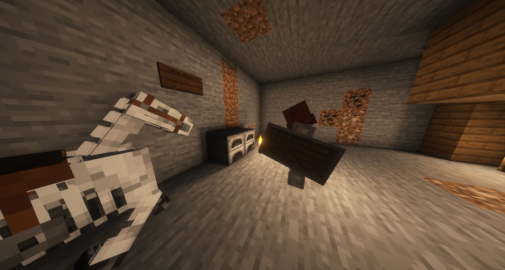
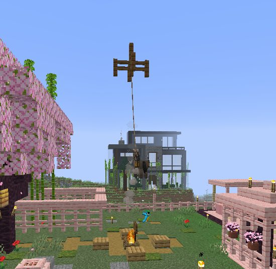

Boletín Oficial del Ayuntamiento del Reino · Se informa, no se alarma
EL HERALDO DEL REINO
Número 177 de septiembre de 2026Tarde del lunes 7 de septiembre a la mañana del martes 8
EL QUE TIENE AL LORO YA HA PUESTO PRECIO: TRESCIENTOS Y VEINTICUATRO HORAS
Segunda carta sin firma a la Encargada del Orden, otra vez mandada a esta redacción para que se publique. La primera no pedía nada. Ésta pide trescientos cacahuates dejados delante de su puerta, da un día de plazo y anuncia que, si no, se llevará también la mascota de otro vecino. Trae una fotografía: el animal, de pie, bajo un letrero que dice NADA SALDRÁ CON VIDA. Consta fallecido desde el 3 de septiembre.
Redactado por la Oficina de Prensa del Ayuntamiento
PORTADA
«Pensaba que esto sería más emocionante»: el segundo papel ya trae precio, plazo y una segunda víctima
Recibió esta Oficina, por segunda vez en dos jornadas y otra vez con la petición
expresa de que se imprima, un escrito sin firma dirigido a la Encargada del Orden.
No trae remite. No trae fecha. Trae una fotografía y, esto es lo nuevo, trae
una cantidad, un plazo y una amenaza a un tercero.
El procedimiento de esta casa ante un papel anónimo no ha cambiado desde ayer:
se reproduce, se transcribe y no se interpreta. Lo que sigue es el papel tal y
como llegó.
ARCHIVO PRUEBA N.º 2
lo que venía pegado
sabes. . . pensaba que esto sería más emocionante. por lo visto no crees en mí.
así que lo dejaré simple, tienes 24h mi querid amada,
para dejar frente a tu casa la cantidad de 300 cacahuates.
obviamente, no pensaré en hacer esto sin un seguro, si no haces lo que te pido, me
llevaré además de la mascota de otro miembro la vida de
dwen y me aseguraré que lo veas. :)
— sin firma —
🖋️ Transcripción de esta Oficina. Se compone con la ortografía puesta, como se
compone todo en esta casa, y sin cambiar ni una palabra ni el orden en que están.
«Sabes... pensaba que esto sería más emocionante. Por lo visto no crees en mí. Así que
lo dejaré simple, tienes 24h mi querid amada, para dejar frente a tu casa la cantidad de
300 cacahuates. Obviamente, no pensaré en hacer esto sin un seguro, si no haces lo que te
pido, me llevaré además de la mascota de otro miembro la vida de dwen y me aseguraré que
lo veas. :)»
Se respeta la redacción del original, incluido el «mi querid amada»,
que es de las dos cartas lo único que se repite palabra por palabra.
Lo que pide, dicho en claro. Trescientos cacahuates. Dejados delante de la
puerta de su casa, que es la misma puerta de los seis carteles. Veinticuatro
horas. Y si no, dos cosas, en este orden: la mascota de otro vecino —al que no
nombra, y que por tanto son todos— y la vida del animal, con el añadido de que ella
lo vea. La carta anterior, la del lunes, no pedía nada de esto: pedía que contestara y que
no metiera a nadie más. En una jornada se ha pasado de una petición a una tarifa.
La cifra. Esta Oficina lleva el archivo y para eso lo lleva. A las 20:30
del lunes, en el tablón del vecindario y a propósito de otra cosa —el precio del aparato de
las huellas—, la destinataria de la carta escribió: «nadie pagará 300 monedas porque le
roben hornos». La carta pide trescientos. Entre una frase y otra hay dos
horas y media. Esta casa hace constar la coincidencia, la hora de las dos, y ninguna
conclusión: no las saca, no le corresponde y no las va a imprimir.
Y lo que venía pegado. Una fotografía, sin recortar. Se ve un loro verde
posado en el suelo, sobre él una chapa que pone Dwem, y detrás un barril,
una antorcha y una pared de madera oscura con un letrero de dos renglones que
dice NADA SALDRÁ CON VIDA. El suelo es de piedra clara. Esta Oficina no ha
identificado el lugar y sigue sin atreverse a suponerlo. No es la misma pared de la
fotografía de ayer: aquélla tenía dos huecos oscuros y ésta tiene un letrero.
Las dos cosas que este Heraldo dijo ayer que había que arrastrar siguen ahí, y las dos
han vuelto a pasar. Primera: la carta escribe «dwen» y la chapa de la
fotografía pone «Dwem». Una letra, por segundo día. Segunda: el animal figura
fallecido en el número 12 de este Heraldo, por denuncia de su propietaria del 3 de
septiembre a las 04:58, y aquí vuelve a salir de pie. Esta Oficina no explica la
contradicción. La imprime, que es lo suyo.
El asunto va íntegro al pliego de la Comisaría, que sale con este número.
ADMINISTRACIÓN
La primera multa de la historia del Reino se puso a las dos partes, por el mismo hecho y en siete minutos
A las 20:00 del lunes, kum4shiro se presentó en la plaza con la primera
denuncia que recibe el cuerpo elegido el día antes: «quiero denunciar a raiden».
El Ayudante del Orden instruyó en el sitio, con el método que esta corporación
reconoce como propio, que es preguntar en voz alta: «¿dónde ocurrió el crimen?».
En la zona de la votación. «Me mató por no darle comida.» Y el detalle que el
denunciante aportó sin que se lo pidieran: «me confié... le di la espalda».
La primera dificultad del expediente fue de padrón y la planteó el propio Ayudante:
«pero si recién ingresa al reino, ¿cómo te mató?», y a continuación «no le
puede caer una multa, ya que ni residencia tiene todavía». Era exacto: la denunciada
llevaba treinta y tres minutos dada de alta. Se había inscrito a las 19:27.
A las 20:06, seis minutos después, Raiden_Akemi se presentó con la
denuncia contraria: «quiero denunciar a kumashiro». El denunciante primero
contestó que era su novia y que no le hicieran caso; la denunciada contestó «primera
vez que lo veo en mi vida». Mazitrvrs resumió el criterio del vecindario en
una línea —«para mí tienen que ir presos los dos»— y el Ayudante resolvió a las
20:07, siete minutos después de abrirse el caso, con dos palabras y una cifra:
«violencia doméstica», «multa de 200 cc a cada uno».
Cuatrocientos cacahuates, repartidos a partes iguales entre el que denunció y la
que fue denunciada. Es la primera sanción que impone este Reino desde que existe, se
resolvió sin tomar declaración a nadie más y se cobró a las dos partes por el mismo
hecho, lo cual esta administración considera el modelo de eficiencia al que aspira:
cierra el expediente y recauda el doble.
No consta que se haya cobrado. Tampoco consta dónde se ingresaría si se cobrara.
ADMINISTRACIÓN
El aparato de las huellas costaba doscientos cincuenta, y una parte de cada pago se iba a otra cuenta
A las 18:21, la Encargada del Orden comunicó al vecindario que el
lector de huellas —la única herramienta de investigación que hay en el Reino—
costaba doscientos cincuenta cacahuates por uso, y propuso que lo pagaran los
culpables, «para financiar sus propias capturas». La respuesta fue instantánea y fue
unánime en contra. El Ministerio sugirió que además cobraran por caso, «así tenéis
un sueldo». Gaaraham03 presentó a las 20:50 una demanda formal, redactada con
encabezado, demandante y demandado: «El pueblo vs GabbyQuill635», por
«abuso de cobro». Rockchango declaró haber sido requerido de pago el día
anterior y añadió, textualmente, «me puse triste». ArsarFurro propuso una
medida que esta Oficina no reproduce porque consiste en colgar a la autoridad en medio de
la plaza.
A las 19:22 —o sea, una hora antes de la demanda— el Negociado técnico ya
había mirado la tarifa. Y lo que salió no fue lo que todo el mundo estaba discutiendo.
Salió esto, y consta por escrito: la tarifa estaba inflada, y una parte de cada
pago se desviaba a una cuenta afiliada al Ministro Pan.
El asunto se ha resuelto archivándolo como error administrativo sin
responsables, que es la figura que esta corporación reserva para lo que no piensa
mirar dos veces. El precio queda en cincuenta el primer uso, y dura el doble que
antes. Sube si se abusa y baja solo a las doce horas.
El Ministro se defendió sin que nadie le hubiera preguntado. A las 19:28,
seis minutos después de leerse el informe y sin que se le nombrara en ninguna de las
quejas anteriores, escribió: «Yo nunca robaría un solo cacahuate al contribuyente,
debió ser un error». Esta Oficina hace constar que no se le acusaba de nada, que
es lo mismo que hizo constar el 4 de septiembre y otra vez el 5. La Encargada del
Orden, que llevaba dos horas recibiendo la culpa de un precio que no había puesto ella,
cerró el asunto a las 20:16 con seis palabras: «seguro fue un error en el
sistema».
El vecindario sacó su propia conclusión y la formuló ArsarFurro a las 19:24:
«postulo a Servicio Técnico para alcalde». Esta corporación no tiene previsto ese
cargo ni piensa crearlo.
URBANISMO
Dos requerimientos de derribo en catorce minutos, y los firmaron los dos únicos agentes que hay
El Ayudante del Orden, a las 21:02, delante del cofre y la fragua de la vivienda inspeccionada. El cartel dice [Privado] y un apellido. Es toda la prueba documental que ha necesitado este expediente y es, hasta la fecha, la mejor rotulación que tiene el Reino.
Archivo Municipal · pase el ratón para revelarla
A las 20:54, el Ministerio puso al Ayudante del Orden sobre el primer
asunto urbanístico de su carrera: «en el camino PÚBLICO entre villa villez y el
ayuntamiento, una casa ha sido construida, así obstruyendo toda la calzada, no se puede
permitir eso». A las 21:00 el Ayudante había localizado la vivienda y la
describió como «parece abandonada». El Ministerio contestó, sin aportar de dónde
lo sabía, que «existen reportes de que se usa, pero poco».
A las 21:02, el Ayudante encontró la única prueba del expediente: un cartel de
[Privado] con un apellido escrito. A las 21:06 el requerimiento estaba
publicado, con cuarenta y ocho horas para pronunciarse o derribo. La propietaria no
ha comparecido, entre otras cosas porque no consta que haya pisado el Reino en toda
la jornada.
Catorce minutos después, a las 21:20, la Encargada del Orden
publicó un requerimiento idéntico contra otro vecino —«su construcción bloquea el
acceso a un puente PÚBLICO, tiene 48 horas para pronunciarse o su muralla será
demolida»—, y el Ministerio, que había ordenado el primero, comentó el segundo con
«¿pelea entre agentes de la ley? me decepcionas gabby». La respuesta de la
autoridad quedó registrada y es la declaración institucional más sincera de la
jornada: «me gusta el drama».
Y la tercera denuncia por ocupación fue contra el propio Ayudante. A las
22:01, Cafecito lo denunció por desorden del vecindario: cofres suyos
repartidos por sitios sueltos del Reino, fuera de su propiedad, lo cual «no sólo arruina
la vista, sino que también desvalora el esfuerzo de los que respetamos nuestro
espacio». Él contestó a las 22:03 que sólo tenía uno, y cerca de la plaza, y que
«si ve un cofre sin señalar retírelo». A las 00:33, dos horas y media más
tarde, el mismo vecino preguntaba a la Encargada del Orden: «¿sabes de algún cofre que
hayas visto mío?»
SUCESOS
La noche en que medio Reino salió a buscar fraguas robadas y volvió con una foto cada uno

22:38. El Ministerio publica esta fotografía con el pie «pillé al ladrón de hornos en acción». Lo que se ve es una fragua encendida, un cartel que dice de quién es la casa, una placa colgada y un caballo. Al presunto no se le ve.
Archivo Municipal · pase el ratón para revelarla
La jornada trajo la primera batida espontánea de la que hay constancia contra el
que lleva desde el 27 de agosto vaciando fraguas ajenas. No la convocó nadie. Empezó a las
22:32, cuando la Encargada del Orden preguntó en la plaza a su propio Ayudante
«¿tienes un cuarto de hornos?», y él contestó «todos mis hornos están en
cofres», contestación que esta Oficina transcribe sin comentario.
A las 22:38, el Ministerio anunció que había pillado al ladrón en acción y
adjuntó una fotografía del interior de una casa que no es la suya. A las 22:51, la
Encargada del Orden publicó otra con dos palabras: «vi algo raro». A las
23:02, Cafecito anunció que tenía un sospechoso y no dijo cuál. Y a las
23:09, la propia Encargada publicó una tercera fotografía —cuatro fraguas apiladas en
un hueco, con lava al lado— dirigida «al secuestrador de mi pájaro», seguida un
minuto después de la única línea de la noche que cierra el asunto: «no está».
Balance de la batida: tres fotografías, ningún detenido, ninguna fragua
recuperada y un sospechoso por cada vecino que participó. Van cinco casas y
siete robos desde el 27 de agosto. Resueltos, los mismos de siempre.
Y el consejo jurídico de la jornada lo dio el Ministerio a las 21:38, sin que se
lo pidieran y con nombre y apellido de por medio: primero apuntó a quién creía él que se
había llevado el pájaro, y después indicó el remedio procesal:
«derrúmbale la casa a cambio». Esta Oficina no reproduce el nombre. Sí hace
constar que es la misma casa a la que el mismo Ministerio abrió expediente de
derribo una hora y cuarto antes, por otro motivo, y que el motivo entonces era el tráfico.
ANOMALÍAS
Se oyeron pasos dos veces en trece horas y media, y las dos veces no había nadie

La fotografía que la Encargada del Orden publicó a las 22:51 con el pie «vi algo raro»: una cruz de madera suspendida en el aire sobre una vivienda, con una cuerda que baja desde ella hasta un animal atado en el jardín. Nadie ha reclamado la estructura, el animal ni la cuerda.
Archivo Municipal · pase el ratón para revelarla
A las 19:21, Mazitrvrs preguntó en la plaza «¿estoy loco o escuché
unos pasos?» y Jooan786 contestó «yo también». A las 08:55 de
la mañana siguiente, trece horas y media después y con otra gente dentro,
Cliqueame escribió «escucho pasos y no hay nadie», y a continuación
«mejor me duermo», que esta corporación considera la conducta correcta.
Ninguno de los dos avisos guarda relación con el otro. Esta administración lo sabe
porque es lo que dice siempre y hasta ahora nunca ha tenido que rectificarlo.
Se suma a lo anterior la estructura fotografiada a las 22:51, que no se apoya en
nada y de la que cuelga una cuerda hasta un animal. El Negociado de Obras hace constar
que no consta licencia, que no consta tampoco quién es el propietario del animal y
que, no habiendo ordenanza que regule las construcciones que no tocan el suelo, la
construcción es enteramente legal.
ANOMALÍAS
Cuando un Fragmento falla no te deja tirado: te deja ahí, y ahí ya está el vecindario
El sitio, fotografiado por Demaxxp desde arriba. Bóvedas iguales, cámaras repetidas, lámparas puestas en fila y ventanucos rojos. Sea lo que sea, no es una cueva: está construido, y está construido en simetría por alguien que sabía lo que hacía.
Archivo Municipal · pase el ratón para revelarla
Publicó Demaxxp a las 21:34 dos fotografías tomadas desde el techo de un
sitio que no admite la palabra cueva: bóvedas iguales repartidas en cuatro brazos,
iluminación regular y unos vanos rojos que se repiten cada tantos metros.
Y esta Oficina hace constar, antes de que nadie lo suponga, lo que ese sitio NO
es. No es el subsuelo del Reino. No es una galería, ni una mina vieja, ni nada a lo que
se llegue cavando. Es el lugar al que va a parar quien usa un Fragmento de la Torre y el
Fragmento no lo deja donde debía. Esta corporación no sabe dónde está, no sabe de quién
es, no sabe quién lo levantó y no dispone de ningún procedimiento para ir allí a
propósito: se llega equivocándose. La postura oficial sobre los Fragmentos no cambia:
no fallan, presentan una desviación de destino de carácter rutinario, y la
desviación no reviste gravedad.
El vecindario, mientras tanto, entra y sale como quien va al mercado, y ya se lo está
vaciando. A las 08:59, LetayReaver informó de que el que le queda cerca de
casa «ya lo saquearon todos», nombró a dos vecinos que esta Oficina no reproduce, y
anunció acto seguido su intención de ir al que le queda cerca a otro, cosa que hizo. O sea
que en este pueblo ya se sabe cuál le toca a cada casa. Hizo constar además, con
admiración y no con queja, que un vecino se ha construido la casa enganchada a una de
esas cámaras.
Recuerda esta corporación que tiene convocada para el sábado 12 una excavación
general para averiguar qué había aquí antes del Reino, y que lo hará cavando, que es
el método que tiene aprobado. Al sitio de las bóvedas, que está construido, iluminado y ya
registrado por medio vecindario, no se llega cavando. Se llega cuando algo sale mal.
Las dos cosas figuran en el mismo orden del día.
La otra excavación de la jornada no encontró mano de obra. A las 07:07,
kum4shiro ofreció cacahuates por excavar «una zona subterránea de al menos 30 por
50». xTheChavitox declinó —«no tengo ganas de excavar, gracias»— y
Cliqueame también, con una fórmula más breve. El ofertante insistió con el
argumento que este Heraldo recomienda a todo el que vaya a contratar: «es poquito».
Contrataciones cerradas: ninguna.
SERVICIOS
PARTE DEL PULSO — once carteles decían un cupo que no era, y una fragua cobraba antes de mirar
Jornada extraordinariamente movida en el Negociado de Pesas y Medidas, y toda ella por
lo mismo: en este Reino los carteles y las máquinas dicen una cosa y hacen otra, y
quien lo descubre es siempre el vecino que estaba pagando.
El carbón.Cliqueame avisó a las 21:08 de que el cartel del puesto
anunciaba un cupo de cuarenta y ocho ventas al día y que a las doce le
cerraban la ventanilla. El cupo real era doce; el cartel se había quedado con un número
viejo de cuando se ajustó la economía. Al mirarlo salió que no era sólo el carbón: pasaba
con los once productos de los puestos de Metales y Joyería. Ya dicen lo que de
verdad se puede vender.
La fragua.Gaaraham03 denunció a las 19:34 que el yunque
«ya me robó 40 cacahuates». La avería es prima hermana de la que este Heraldo
publicó como resuelta el 1 de septiembre: cobra los veinte antes de mirar la pieza,
de modo que si la pieza no se puede arreglar, el vecino se queda sin arreglo y sin dinero.
Los cuarenta se le devuelven. La medida correctora está anotada.
La caña. Desde el viernes, el Reino no se estaba enterando de las capturas
de nadie: se pescaba y el contador no subía. Lo dijo un vecino que llevaba toda la
tarde echando lances por un encargo. Corregido, con la advertencia de que cuentan los
peces y no lo que sube del fondo.
El laboratorio del bosque. Tiene dos carteles que dicen SEGURIDAD ÁREA 3 y
el punto que hay que instalar está en uno solo de los dos, sin ninguna señal en el otro.
Lo destapó Demaxxp a las 18:09 con un informe de una precisión que esta Oficina
quisiera para sus propios expedientes. La nota del encargo ya lo advierte.
La cocina. Dos vecinos entregaron sus seis bacalaos al Chef y se quedaron con el
encargo abierto, sin paga y sin galardón, porque se rompió el cierre y no la
entrega. A las 12:41 quedó resuelto y se les avisó de que no hacía falta volver a
pescar nada.
La lluvia ácida. Se anuncia, se convoca y no cae: el aviso salta, el
vecindario se pone a cubierto y el cielo no hace nada, porque estamos en verano y en verano
aquí no llueve. xTheChavitox lo denunció a las 06:54 creyendo que se había
desactivado el día de la votación. No se desactivó: pierde contra la estación. En
otoño y en invierno hará lo suyo. Se anota para que deje de anunciarse cuando no puede
cumplir, que es también la política general de esta corporación y tampoco se cumple.
Y el trazado. El Ministerio confirmó a las 19:20 que los mapas de fuera
del Reino han dejado de dibujarse, y que esta vez era a propósito. El Reino tiene
mapas propios, que se ganan. El criterio, en palabras del Ministerio: «la idea era que
la gente se aprendiese la zona». La reacción del vecindario, a las 19:35 y en palabras
de kum4shiro: «sin mapa ando perdidísimo».
Ninguna de las siete reviste gravedad y todas estaban previstas.
SOCIEDAD
El Emperador dijo cuatro palabras, y a un vecino le tiembla el pulso cada vez que suena la campana
Estuvo el Emperador Duke en el Reino la tarde del lunes. Saludó a las
19:48. Presenció la instrucción de la primera denuncia del cuerpo de orden y
contribuyó a ella con dos aportaciones: «grande la policía» a las 20:01 y, un
segundo después, «sospechoso». No consta que la segunda se refiriera a nadie en
particular y esta Oficina se abstiene de averiguarlo.
Nueve horas más tarde, ya de madrugada y sin que el Emperador estuviera delante,
xTheChavitox hizo la declaración de fe más completa que se ha registrado en la plaza:
«cada vez que suena la campana creo que ha vuelto Duke y me pongo nervioso», y a
renglón seguido «le he dicho a mi pareja que se llama Duke para poder decirlo en voz
alta». LetayReaver preguntó lo único que había que preguntar —«¿qué ha
dicho tu pareja?»— y no obtuvo respuesta. Gaaraham03 zanjó: «que sí,
chavito, que sí, ya sabemos que te gusta Duke». El interesado cerró con
«grande el Emperador Duke».
Esta corporación recuerda que el culto al Emperador no está regulado, que no hay
inscripción ni cuota, y que renombrar a un tercero para poder pronunciar el nombre
imperial en casa no consta en ninguna ordenanza ni a favor ni en contra.
SOCIEDAD
El Ministerio identificó a dos vecinos en un retrato colgado y precisó cuál era cuál
El retrato, revelado y colgado en su marco. El termómetro de la casa marcaba 30 °C cuando se tomó la fotografía, que es la única lectura de temperatura de la jornada y la aporta un vecino, no este Ayuntamiento.
Archivo Municipal · pase el ratón para revelarla
Circuló a las 16:18 la fotografía de un retrato colgado en una casa: un
caballero de melena negra, chaqueta blanca y camisa roja, sosteniendo a un simio pequeño
vestido de verde. El Ministerio lo examinó y emitió dictamen en dos líneas y en
catorce segundos: «Rockchango y Arsar», y a continuación, para que no hubiera
dudas administrativas, «Rock es el de la derecha».
Demaxxp avaló la identificación con la única fórmula posible: «tiene todo el
sentido del mundo». Ninguno de los dos identificados ha recurrido. El Negociado de
Archivo hace constar que es la primera obra de arte del Reino con atribución oficial de
modelos, y que la atribución la ha hecho el mismo departamento que no encuentra
quinientos millones.
ADMINISTRACIÓN
Buscan solar para la cárcel, y la única propuesta es que esté lejos
A las 00:35, la Encargada del Orden planteó a su Ayudante la cuestión que
esta corporación lleva trece jornadas sin plantearse: «hay que buscar dónde hacer la
cárcel». Mazitrvrs, que pasaba, aportó la única propuesta de emplazamiento que
consta en el expediente: en el mundo de abajo. El Ayudante contestó que habría que
hablarlo con el Ministerio.
El Centro de Reconsideración lleva trece jornadas con cero reclusos, y hoy
además con dos multados que no han pagado, un abogado sin colegiar y ninguna puerta que
cierre. La propuesta de llevarlo al mundo de abajo tiene, a juicio de esta administración,
la ventaja evidente de que de allí no se escapa nadie, y el inconveniente, también
evidente, de que tampoco iría nadie a vigilarlo.
En el resto del negociado, sin novedad: Fátima no acudió a su puesto por
decimoquinta jornada · la Comisión de Estudio del Subsuelo Rentable no se ha
reunido, y ahora tiene además unas fotografías que estudiar · no se ha avistado
ningún lagomorfo, por decimoquinta vez · y Don Clocencio sigue sin fecha de
juicio, que ya son trece jornadas y sigue sin haber sala.
SUCESOS
La única corrección ortográfica de la jornada se hizo dentro de un insulto
Entre las 22:26 y las 22:28, dos vecinos que no se conocían mantuvieron en
la plaza una conversación entera compuesta de saludos de su tierra. Lo notable no es el
vocabulario, que esta Oficina no transcribe. Lo notable es que uno de los dos se detuvo
tres veces a corregirle al otro la grafía de la palabra con la que le acababan de
llamar la atención, hasta dejarla escrita como se debe: primero enmendándola entera,
después con asterisco, y al final separándola en tres palabras.
El corregido dio las gracias. Textualmente: «qué bueno que le pregunté».
El Negociado de Lengua del Reino, que no existe, hace constar que es la única
enmienda ortográfica registrada en catorce jornadas y que se produjo en el contexto en
el que menos falta hacía, que es también donde suelen producirse las cosas útiles de este
pueblo.
Negociado de Orden y Convivencia · pliego tercero
LA COMISARÍA DEL REINO
Dos cargos electos, una multa puesta a las dos partes, cero presos y una cantidad exigida por escrito
Sale este pliego por tercera vez y con el expediente segundo agravado: el escrito anónimo de ayer, que no pedía nada, tiene hoy continuación, y la continuación trae cantidad, plazo y una amenaza a un vecino sin identificar. Sale además con la primera sanción que impone este Reino desde que existe, que se puso a las dos partes.
Expediente segundo de la Comisaría · agravado el 8 de septiembre
LA SEGUNDA CARTA
Segundo escrito anónimo dirigido a la Encargada del Orden y remitido a esta redacción para su publicación. A diferencia del primero, contiene exigencia económica —300 cacahuates—, lugar de entrega —delante de la puerta de la destinataria—, plazo —24 horas— y una amenaza a la mascota de un tercero que no se nombra. Adjunta fotografía del loro Dwem, que consta fallecido desde el 3 de septiembre, de pie y bajo un letrero de dos renglones que dice NADA SALDRÁ CON VIDA. La carta escribe «dwen»; la chapa, «Dwem». Segunda vez.
Abierto y agravado
El cuerpo, y quién responde por cada uno
GabbyQuill635Encargada del OrdenAvalado por El vecindario, por unanimidad, el 6 de septiembre. Sigue siendo la autoridad del Reino y la perjudicada del expediente. En su segunda jornada de mandato ha firmado un requerimiento de derribo, ha recibido una demanda formal del vecindario por el precio de una herramienta que no puso ella, ha buscado solar para la cárcel y ha recibido una petición de rescate. En ese orden.
Jooan786Ayudante del OrdenAvalado por El vecindario, en la cuarta votación, el 6 de septiembre. Instruyó y resolvió el primer expediente sancionador del Reino en siete minutos, localizó en seis una vivienda que corta el camino público y fue denunciado él mismo por dejar cofres sueltos. Todo entre las 20:00 y las 22:03 del mismo lunes.
kum4shiroAspirante · candidatura derrotadaAvalado por Se ofreció el 3 de septiembre; no obtuvo el cargo. Es el primer denunciante de la historia del cuerpo que no llegó a dirigir, y también el primer sancionado. Aparte de eso, busca operarios.
Cómo fue, por horas
18:21La Encargada del Orden comunica que la herramienta de investigación cuesta 250.
19:22El informe técnico dice que la tarifa estaba inflada y a dónde iba una parte.
20:00Primera denuncia recibida por el cuerpo electo. Siete minutos después, primera multa.
20:30La Encargada escribe en el tablón: «nadie pagará 300 monedas».
21:06Primer requerimiento de derribo. A las 21:20, el segundo, de la otra agente.
23:09La Encargada fotografía cuatro fraguas y escribe «al secuestrador de mi pájaro».
—Llega a esta redacción la segunda carta, con precio, plazo y fotografía.
Lo que obra en poder de la Comisaría
Prueba segunda. La fotografía adjunta a la carta. Loro verde con chapa Dwem, barril a su izquierda, antorcha encendida, pared de madera oscura y letrero de dos renglones: NADA SALDRÁ CON VIDA. Suelo de piedra clara. El lugar no está identificado, y es lo que este pliego vuelve a pedir al vecindario: que alguien reconozca ese letrero, que lo puso alguien y que se lee.
Archivo Municipal · pase el ratón para revelarla
Esta Comisaría no acusa a ningún vecino, no publica deducciones que terminen en un nombre propio y no publica relación de presencias mientras no haya nadie señalado. Se hace constar, porque es un dato del expediente y no un razonamiento, que la cifra exigida por la carta se había dicho en voz alta en el tablón dos horas y media antes. Los hechos van en el orden en que constan y juzga quien lee.
La Comisaría del Reino · con el visto de la Oficina de Prensa
Necrológicas · Registro Civil del Reino
LA ESQUELA
El Ayuntamiento del Reino participa las defunciones de la jornada que a su juicio merecen constar, y ruega una oración por quienes ya han vuelto.
LA ESQUELA
Raiden_Akemi
Que se dio de alta en el padrón de este Reino a las 19:27 del lunes, que a las
20:00 ya tenía denuncia puesta por un vecino, que a las 20:06 puso ella la
suya, y que entre las 20:06 y las 20:07 —sesenta y un segundos—
entregó la vida tres veces, las tres a manos de la misma persona: la que la había
denunciado.
Cuarenta minutos de vecindad. Una defunción causada, tres padecidas, dos denuncias
cruzadas y una multa de doscientos cacahuates que, según hizo constar el propio Ayudante
del Orden que instruía el caso, no se le podía poner porque ni residencia tenía
todavía. Se le puso.
Deja escrita en el registro una sola frase de descargo, y esta Oficina la
considera suficiente: «primera vez que lo veo en mi vida». Goza de buena salud.
LA ESQUELA
Demaxxp
Que entregó la vida ocho veces en la misma jornada, empezando a las 17:32
y terminando a las 21:16, y que en ese trayecto se cayó desde altura tres
veces y fue abatido por un cerdo ardiendo otras tres, dos de ellas en el
mismo minuto, a las 20:24.
Fue también el vecino que fotografió las bóvedas, el que redactó el informe de averías
más claro que ha recibido esta administración y el que a las 22:00, tras una jornada
así, sólo pidió que lo llevaran a la plaza porque «me duelen los pies».
Ruegan sus deudos una oración por los cerdos ardiendo, que llevan
cuatro números apareciendo en este pliego y a los que nadie ha abierto expediente. Goza de
buena salud.
Oficina de Prensa · Negociado de Registro Civil y Defunciones
El parte de la jornada
Duración de la jornada
20 h 54 min, de las 14:08 a las 11:02
Cuentas en el Reino
18 — 16 vecinos y 2 de esta administración
Altas tramitadas
2
Máxima concurrencia
8 a la vez, a las 19:30
Defunciones
18
De ellas, causadas por otro vecino
5
Vecino con más defunciones
Demaxxp, 8
Primera causa de muerte
empate a tres: el cerdo ardiendo, la caída y un vecino
Defunciones de la recién llegada en 61 segundos
3
Minutos que llevaba en el padrón cuando la denunciaron
33
Multas impuestas en toda la historia de este pueblo
1, y es de esta jornada
Partes a las que se puso esa multa
2, las dos
Importe total
400 cacahuates
Minutos que tardó la instrucción
7
Cantidad exigida por la carta anónima
300 cacahuates
Horas de plazo que da
24
Firmas que trae
0
Mascotas de terceros que amenaza
1, sin decir de quién
Horas entre la primera carta y la segunda
menos de 24
Letras de diferencia entre el nombre escrito y el de la chapa
1, por segunda vez
Animales que constan fallecidos y salen de pie en la fotografía
1
Veces que se había dicho la cifra de 300 esa tarde
1, dos horas y media antes
Precio de la herramienta de investigación al empezar la jornada
250
Precio al acabarla
50, y dura el doble
Cuentas ajenas a las que iba una parte de cada pago
1
Responsables del error administrativo
0
Desmentidos que no había pedido nadie
1, seis minutos después
Demandas formales presentadas por el vecindario
1
Requerimientos de derribo
2, y los dos con 48 horas
Agentes de la ley que se cruzaron requerimientos
2 de 2
Carteles de venta que decían un cupo que no era
11
Cacahuates devueltos por una fragua que cobra antes de mirar
40
Jornadas que llevaba la caña sin contar las capturas de nadie
3
Avisos de lluvia ácida que mojaron
0, porque es verano
Fotografías publicadas del ladrón de fraguas
3
Ladrones de fraguas identificados
0
Casas robadas desde el 27-ago
5
Robos en esas casas
7
Resueltos
0
Veces que se oyeron pasos sin nadie delante
2, con trece horas y media entre una y otra
Construcciones sin licencia que no tocan el suelo
1
Vecinos que aceptaron excavar 30 por 50
0
Días que avanzó el almanaque
36
Jornadas de Fátima sin acudir a su puesto
15
Lagomorfos avistados
0, por decimoquinta jornada
Jornadas de Don Clocencio sin fecha de juicio
13
Reuniones de la Comisión del Subsuelo Rentable
0
Aviso oficial
Ante el segundo escrito anónimo que se reproduce en portada, este Ayuntamiento hace
saber lo siguiente. Primero, que se publica a petición de quien lo mandó, y que esta casa
publica documentos pero no los suscribe ni los cumple. Segundo, que esta corporación
no dispone de partida presupuestaria para rescates, extremo que lamenta y que no piensa
corregir, y que quien decida pagar lo hará por su cuenta y sin acta. Y tercero, que el
plazo de veinticuatro horas que fija el escrito no obliga a nadie, porque esta
administración no reconoce plazos que no haya puesto ella.
Hace constar además el Negociado de Tasación, que sigue sin existir, un hecho que le parece
digno de mención: los trescientos cacahuates de ese papel son el primer precio escrito que
tiene este Reino. No hay tabla de precios, no hay peritos y no hay más tarifas que las que
cobran las máquinas, que esta misma jornada ha quedado demostrado que se equivocan. De modo que,
a falta de otro, el único importe fijado por escrito en la historia de este pueblo lo ha
fijado alguien que no firma. Esta corporación se compromete a publicar una tabla propia en
cuanto disponga de un negociado que la haga.
Se ruega por último al vecindario que mire el letrero del fondo de la fotografía. Son
dos renglones, están escritos a mano y los puso alguien. Ayer se pidió que se mirara una pared y
no contestó nadie; hoy se pide que se lea un cartel, que es más fácil, y esta Oficina insiste
porque es la única diligencia que sabe pedir y sigue siendo la única que puede hacer cualquiera.